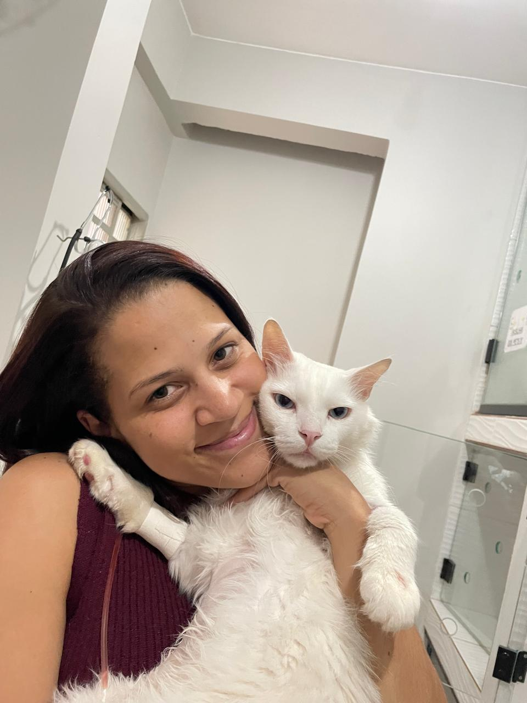

Seu pet é parte da sua família, e nós da Fazendeiro Pet cuidamos dele como se fosse parte da nossa. Com atendimento veterinário completo, com a dedicação e o afeto que ele merece.
0
Procedimentos
0
Cirurgias

Sobre
Somos uma clínica com amor pelos animais atendimento carinhoso, equipe especializada e tecnologia para cuidar do seu pet.